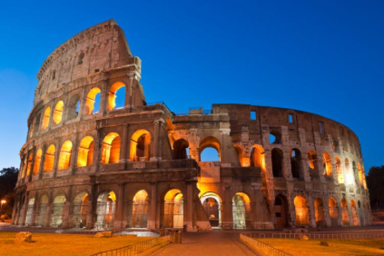

History
Rome is a city and special comune (named "Roma Capitale") in Italy. Rome is the capital of Italy and of the Lazio region. With 2.9 million residents in 1,285 km2 (496.1 sq mi), it is also the country's largest and most populated comune and fourth-most populous city in the European Union by population within city limits. The Metropolitan City of Rome has a population of 4.3 million residents. The city is located in the central-western portion of the Italian Peninsula, within Lazio (Latium), along the shores of Tiber river. Vatican City is an independent country within the city boundaries of Rome, the only existing example of a country within a city: for this reason Rome has been often defined as capital of two states.
Rome's history spans more than two and a half thousand years. While Roman mythology dates the founding of Rome at only around 753 BC, the site has been inhabited for much longer, making it one of the oldest continuously occupied sites in Europe.Eventually, the city successively became the capital of the Roman Kingdom, the Roman Republic and the Roman Empire, and is regarded as one of the birthplaces of Western civilization and as the first ever metropolis. It is referred to as "Roma Aeterna" (The Eternal City) and "Caput Mundi" (Capital of the World), two central notions in ancient Roman culture.
After the fall of the Western Empire, which marked the beginning of the Middle Ages, Rome slowly fell under the political control of the Papacy, which had settled in the city since the 1st century AD, until in the 8th century it became the capital of the Papal States, which lasted until 1870.